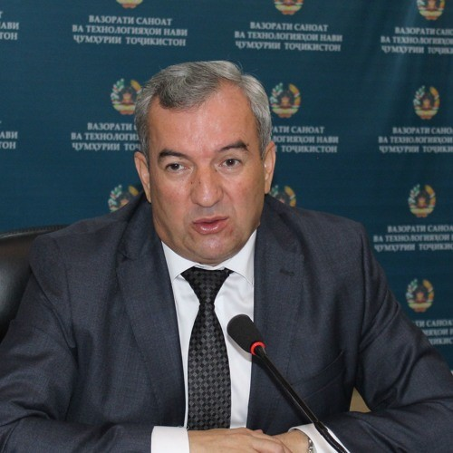
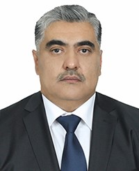
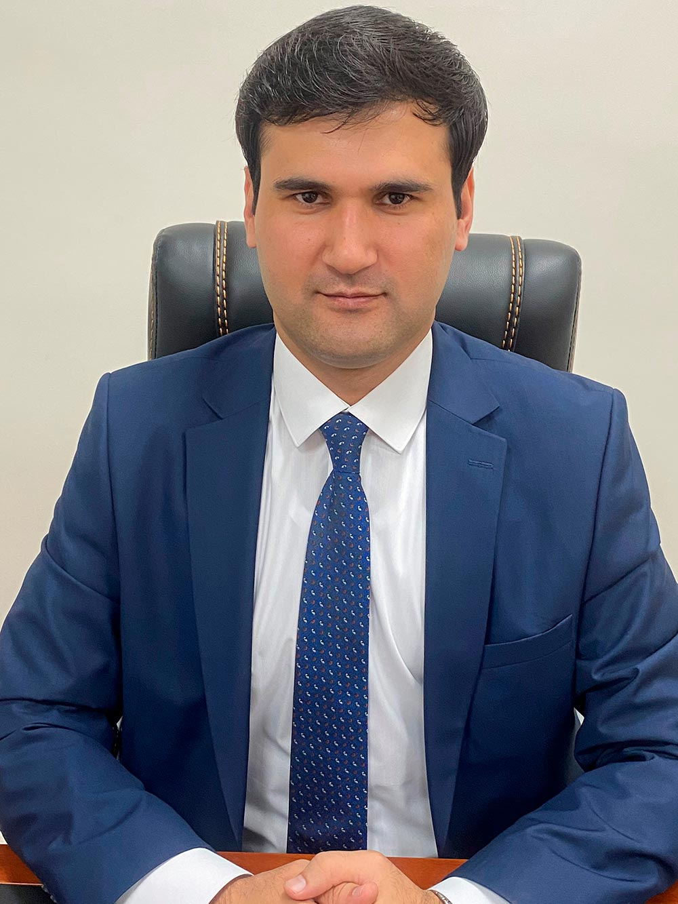

ДИРЕКТОР
ШАВКАТ БОБОЗОДА
ДИРЕКТОРИ АГЕНТИИ СОДИРОТИ НАЗДИ ҲУКУМАТИ ҶУМҲУРИИ ТОҶИКИСТОН
- *Аз январи соли 2019 дар вазифаи Директори Агентии содироти назди Ҳукумати Ҷумҳурии Тоҷикистон кор мекунад.
- *Соли таваллуд: 3 июни соли 1962
- *Ҷои таваллуд: Ҷумҳурии Тоҷикистон
- *Миллат: тоҷик
- *Соли 1985 Институти политехникии Тољикист (рўзона)-ро хатм кардааст.
- *Ихтисос: муҳандис механик–технолог
- *Унвони илмӣ: номзади илмњои техникї.
- *Кадом забонҳои хориҷиро медонад: русӣ, узбекӣ
- *Вакили Маҷлиси вакилони халқ ҳаст ё не: не
- *Бо мукофотҳои давлатӣ сарфароз гардонида шудааст ё не: Бо медали «20 солагии Истиқлолияти давлатии Ҷумҳурии Тоҷикистон»
- *Вазъи оилавӣ: оиладор.
- *Суроға: шаҳри Душанбе, кўчаи Алишер Навої 11-8, хонаи 50
| Солҳои 1979-1980 | Коргари оддии фабрикаи рўймолбарорї, шањри Хуљанд |
| Солҳои 1980 (02-09) | Ёрдамчии устои дараљаи V, шањри Хуљанд |
| Солҳои 1980-1985 | Донишљўи институти политехники Тољикистон, шањри Душанбе |
| Солҳои 1985-1988 | Муњандиси шуъбаи механики Вазорати саноати мањалии Тољикистон, шањри Душанбе |
| Солҳои 1988-1999 | Сардори шуъбаи механики энергетики фабрикаи «Зарбоф», шањри Хуљанд |
| Соли 1999-2003 | Директори маркази шуѓли ањолии Њукумати шањри Чкалов |
| Солҳои 2003-2004 | Сардори идораи мењнат ва масълањои иљтимоии Њукумати вилояти Суѓд |
| Солҳои 2004-2006 | Муовини раиси вилояти Суѓд |
| Солҳои 2006-2012 | Раиси шањри Чкалов |
| Соли 2012 -2013 | Мудири шуъбаи саноат ва энергетикаи Дастгоњи иљроияи Президенти Љумњурии Тољикистон |
| Солҳои 2013-2019 | Вазири саноат ва технологияњои нави Љумњурии Тољикистон |
| Аз январи соли 2019 то ҳол | Директори Агентии содироти назди Њукумати Ҷумҳурии Тоҷикистон |

МУОВИНИ ЯКУМ
НАЗИРМАДЗОДА Бахтиёр.
МУОВИНИ ЯКУМИ ДИРЕКТОРИ АГЕНТИИ СОДИРОТИ НАЗДИ ҲУКУМАТИ ҶУМҲУРИИ ТОҶИКИСТОН
НАЗИРМАДЗОДА Бахтиёр 23 майи соли 1972 дар Ҷумҳурии Тоҷикистон таваллуд шудааст, миллаташ тоҷик, маълумоташ олӣ.
Соли 1994 Донишгоҳи миллии Тоҷикистонро бо ихтисоси ҳуқуқшинос, соли 2002 Академияи гумруки Федератсияи Россияро бо ихтисоси менеҷери соҳаи гумрук ва соли 2006 Академияи хизмати давлатии назди Президенти Федератсияи Россияро бо ихтисоси иқтисодчӣ хатм намудааст.
Солҳои 1994-2008 дар вазифаҳои мутахассиси дараҷаи 3 дар Ширкати ҳуқуқи байналмилалии «Контракт», Мудири истеҳсолии ширкати байналмилалии иттифоқи ҳуқуқшиносони Ҷумҳурии Тоҷикистон, директори генералии Ширкати «Контракт» - и шаҳри Душанбе, сардори шӯъбаи таъминоти ҳуқуқӣ, сардори шӯъбаи ҳамоҳангсозӣ ва такмили маъмурияти дорои андоз ва гумрук ва нозири калони раёсати ҳамкориҳои байналмилалии гумрукии Кумитаи гумруки назди Ҳукумати Ҷумҳурии Тоҷикистон кор кардааст.
Солҳои 2008-2010 Сардори Раёсати сармоягузорӣ дар Кумитаи давлатии сармоягузорӣ ва идораи амволи давлатии Ҷумҳурии Тоҷикистон ва солҳои 2010-2012 сардори Раёсати маркетинг ва танзими фаъолияти тиҷорат, сардори Сарраёсати таҳлили конъюнктураи бозор ва танзими фаъолияти тиҷоратии Вазорати рушди иқтисод ва савдои Ҷумҳурии Тоҷикистон буд.
Солҳои 2012-2014 ба ҳайси Муовини Сардори Сарраёсати пешгӯии сиёсати сармоягузорӣ ва танзими рушди минтақаҳои Вазорати рушди иқтисод ва савдои Ҷумҳурии Тоҷикистон фаъолият намудааст.
Аз 12 июли соли 2014 то 12 январи соли 2017 дар вазифаи Мушовири бахши Ёрдамчии Президенти Ҷумҳурии Тоҷикистон оид ба масъалаҳои иқтисодӣ кор мекард.
Аз 12 январи соли 2017 то муовини Раиси шаҳри Душанбе кор кардааст.
5 апрели соли 2019 муовини якуми директории Агентии содироти назди Њукумати Љумњурии Тољикистон таъин шудааст .

МУОВИН
РАХИМЗОДА Баходур Карим
- *От 12 майя 2014 г. - главный специалист Управления стратегического планирования и реформ Исполнительного аппарата Президента Республики Таджикистан.
- *Год рождения: 19 февраля 1987 г.
- *Место рождения: район Муминабад, Республики Таджикистан
- *Национальность: таджик
- *Образование: высшее
- 2010 г. студент Таджикский национальный университет
- 2012 г. магистр Российский университет дружбы народов
- *Специальность:
- Экономист менеджер
- Международный менеджмент
- *Учёное звание: кандидат экономических наук
| 2005-2010 гг. | студент Таджикский национальный университет |
| 2010-2012 гг. | магистрант Российский университет дружбы народов |
| 2012-2014 гг. | Ассистент кафедры менеджмента и маркетинга факультет экономики и управления Таджикский национальный университет |
| с 12 мая 2014 г. до нас. время | главный специалист Управления стратегического планирования и реформ Исполнительного аппарата Президента Республики Таджикистан |
| Женат: | имею двоих детей |